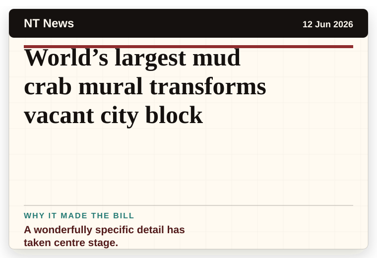
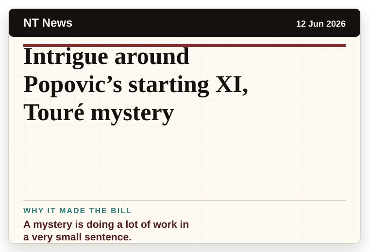
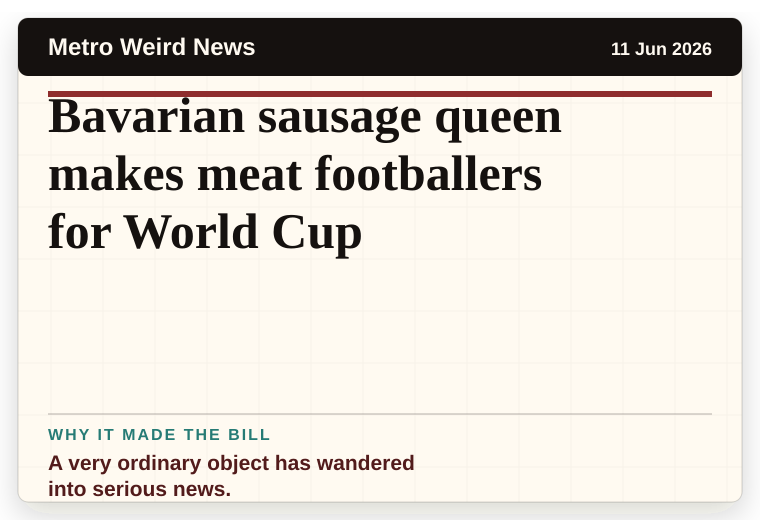
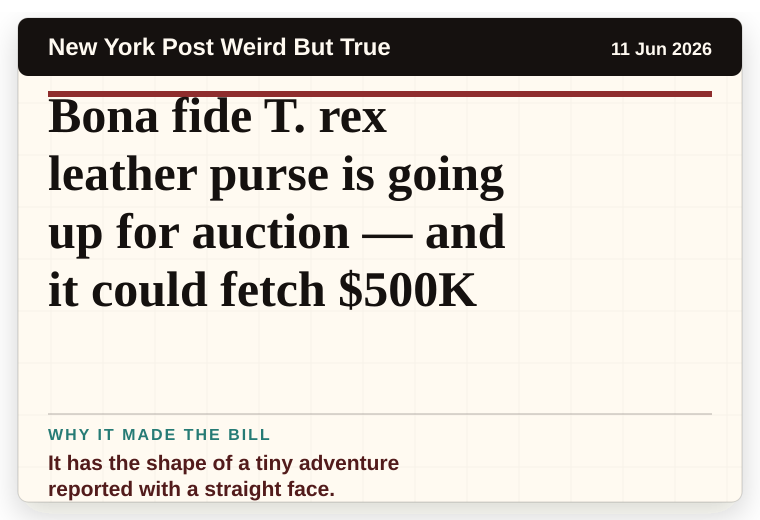
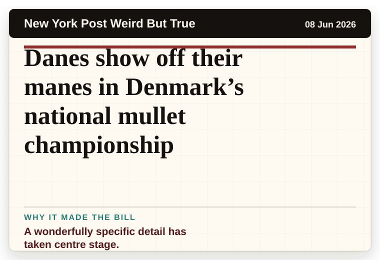

NT News
Australia
World’s largest mud crab mural transforms vacant city block
A wonderfully specific detail has taken centre stage.
A dated record of earlier headline boards, kept so the room can remember which strange sentence got the laugh last time.
Record updated: 12 Jun 2026, 10:26 PM AEST

A wonderfully specific detail has taken centre stage.

A mystery is doing a lot of work in a very small sentence.

A very ordinary object has wandered into serious news.

It has the shape of a tiny adventure reported with a straight face.

A wonderfully specific detail has taken centre stage.